Introduction
The Torque 3D World Editor allows you to quickly add different types
of precipitation to your level. However, Precipitation is used as a general term meaning any type of particle moving downward. The ability to quickly add rain, snow, or even a sandstorm to your
level is built into the editor.
Adding Precipitation
To add Precipitation to a level, switch to the Library tab in the Scene Tree panel. Click on the Level tab amd double-click the Environment folder. Locate the Precipitation entry.
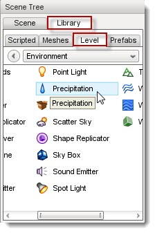
Double-click the Precipitation entry.The Create Object dialog will appear.
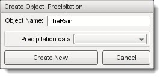
Enter a name for your Precipitation object. The Precipitation data field allows you to choose a datablock to start with as the basis for your new object. Click the drop down box for a list of available datablocks.
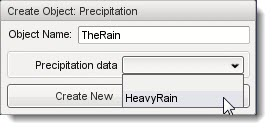
For the Full template, your only choice is HeavyRain so select it then click Create New. Your new Precipitation object will be added to your level, and rain will start falling automatically. The stock datablock for HeavyRain simulates a light shower, so you may not see much rain falling:
(click to enlarge)
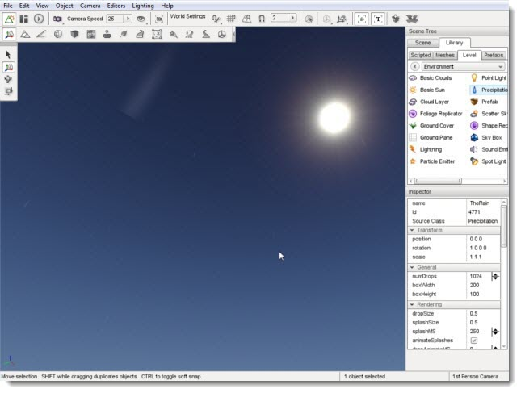
The HeavyRain datablock is located in the game/art/datablocks/environment.cs file. Its initial data contains the following:
datablock PrecipitationData(HeavyRain)
{
soundProfile = "HeavyRainSound";
dropTexture = "art/environment/precipitation/rain";
splashTexture = "art/environment/precipitation/water_splash";
dropSize = 0.35;
splashSize = 0.1;
useTrueBillboards = false;
splashMS = 500;
};
We will get into manipulating the datablock later.
Precipitation Properties
Additional properties can be changed with the Inspector pane. To change a Precipitation objects properties using the Inspector Pane click the Scene tab, then click the name of your new Precipitation object. The Inspector pane will update to display the current properties of your new sun.
Hover over each section in the image below to see a description of the fields within it:
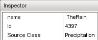name: TypeName. Optional global name of this object.
id : TypeCaseString. SimObjectId of this object. Read Only.
Source Class : TypeCaseString. Source code class of this object. Read Only.', WIDTH, 450)" onMouseOut="UnTip()" >
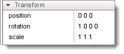position: MatrixPosition. Object world position.
rotation : MatrixOrientation. Object world orientation.
scale : Point3F. Object world scale.', WIDTH, 450)" onMouseOut="UnTip()" >
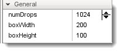numDrops: TypeS32. Number of drops allowed to exists in the precipitation box at any one time.
boxWidth : TypeF32. Width of precipitation box.
boxHeight : TypeF32. Height of precipitation box.', WIDTH, 450)" onMouseOut="UnTip()" >
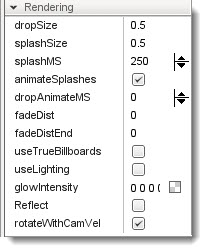dropSize: TypeF32. Size of each drop of precipitation. This will scale the texture.
splashSize : TypeF32. Size of each splash animation for when a drop collides.
splashMS : TypeS32. Life of splashes in milliseconds.
animateSplashes : TypeS32. Check to enable splash animation on collision.
dropAnimateMS : TypeS32. If greater than zero, will animate the drops from the frames in the texture.
fadeDist : TypeF32. The distance at which fading of the drops begins.
fadeDistEnd : TypeF32. The distance at which fading of the particles ends.
useTrueBillboards : TypeBool. Check to make drops true (non axis-aligned) billboards.
useLighting : TypeBool. Check to enable shading of the drops and splashes by the sun color.
glowIntensity : TypeColorF. Set to 0 to disable the glow or or use it to control the intensity of each channel.
reflect : TypeBool. This enables the precipitation to be rendered during reflection passes. This is expensive.
rotateWithCamVel : TypeBool. Enables drops to rotate to face camera.', WIDTH, 450)" onMouseOut="UnTip()" >


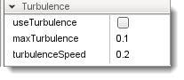useTurbulence: TypeBool. Check to enable turubulence. This causes precipitation drops to spiral while falling.
maxTurbulence : TypeF32. Radius at which precipitation drops spiral when turbulence is enabled.
turbulenceSpeed : TypeF32. Speed at which precipitation drops spiral when turbulence is enabled.', WIDTH, 450)" onMouseOut="UnTip()" >
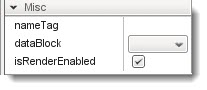nameTag: TypeCaseString. Name of the precipitation box.
dataBlock : TypeGameBaseDataPtr. Script datablock used for game objects.
isRenderEnabled : TypeBool. Only render if true (and if class is render-enabled, too).', WIDTH, 450)" onMouseOut="UnTip()" >

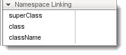superClass: TypeString. Links object to script super class (parent) namespace.
class: TypeString. Links object to script class namespace.
className: TypeString. Legacy version of class field.
', WIDTH, 450)" onMouseOut="UnTip()" >
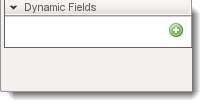(n/a): *. No stock dynamic values.', WIDTH, 450)" onMouseOut="UnTip()" >
PrecipitationData Properties
When you add a Precipitation object to a level from the Library, you are adding the actual
precipitation object. In order for the object to work however it must be assigned a datablock. Datablocks have their own set of properties which are transmitted over a server to each client. When creating or editing a PrecipitationData datablock, you will be modifying the following properties:
(hover over image for descriptions

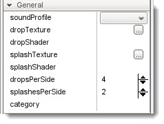soundProfile: TypeSFXTrackName. A datablock that describes sound data for playback.
dropTexture : TypeFilename. Texture filename for drop particles.
dropShader : TypeString. The name of the shader used for raindrops.
splashTexture : TypeFilename. Texture filename for splash particles.
splashShader : TypeString. The name of the shader used for rain splash.
dropsPerSide : TypeS32. How many drops are on a side of the raindrop texture.
splashesPerSide : TypeS32. How many splash are on a side of the splash texture.
category : TypeCaseString. Used by the Creator in the editor to classify creatable shapes.', WIDTH, 450)" onMouseOut="UnTip()" >
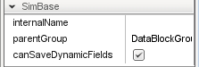canSaveDynamicFields: typeBool. True if dynamic fields (added at runtime) should be saved, defaults to true.
internalName : TypeString. Non-unique name used by child objects of a group.
parentGroup : TypeString. Group object belongs to.', WIDTH, 450)" onMouseOut="UnTip()" />

(n/a): *. No stock dynamic values.', WIDTH, 450)" onMouseOut="UnTip()" >
Conclusion
Of all the objects you can add to a level, Precipitation has the
widest range of applications. Remember, this object is not limited to
rain. Anything that can fall from the sky or float in the air over
large areas can be simulated with Precipitation: snow, sandstorms,
falling ash and rock, fireflies, and so on. Take the time to experiment
with this to see what you can come up with.
|
{kind=link}